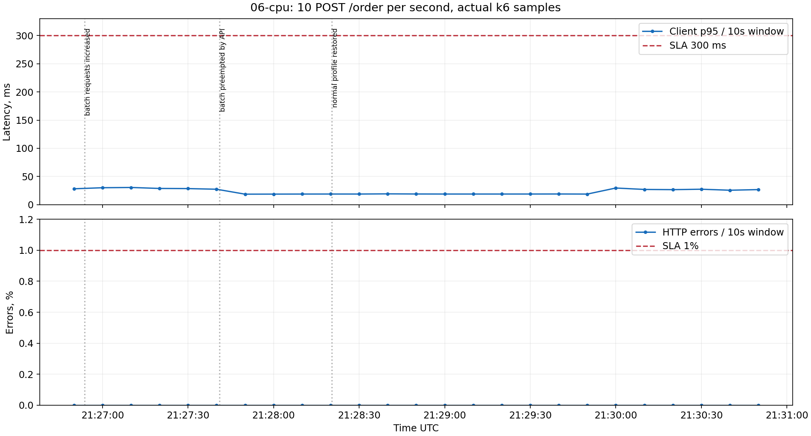
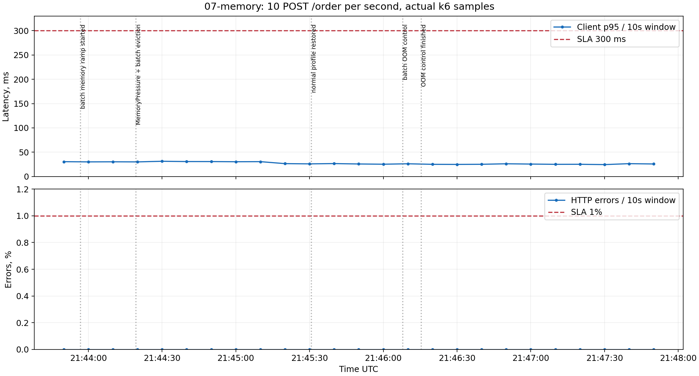
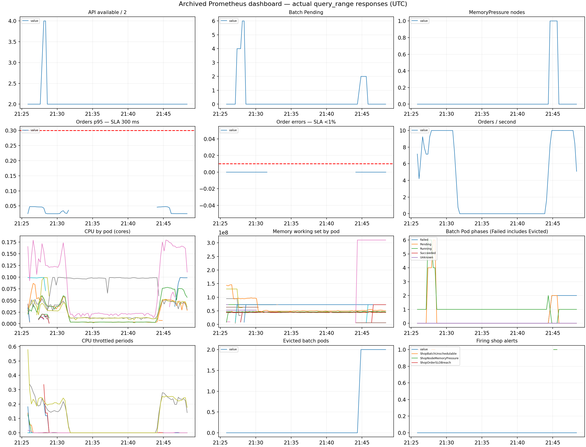

Архив реальных наблюдений, не текущее состояние kubectl. Каждый снимок содержит дату и команды. Кластер после экспериментов восстановлен. Масштаб страницы можно менять Ctrl+/Ctrl−; F11 — полный экран.
Источник: evidence/04-spread.txt
2026-10-30T21:13:04.244373+00:00 $ kubectl --context kind-lab2 get nodes -o wide NAME STATUS ROLES AGE VERSION INTERNAL-IP EXTERNAL-IP OS-IMAGE KERNEL-VERSION CONTAINER-RUNTIME lab2-control-plane Ready control-plane 6d2h v1.37.0 172.20.0.2 <none> Debian GNU/Linux 13 (trixie) 7.2.11-arch1-1 (amd64) containerd://2.3.4 lab2-worker Ready <none> 16m v1.37.0 172.20.0.3 <none> Debian GNU/Linux 13 (trixie) 7.2.11-arch1-1 (amd64) containerd://2.3.4 $ kubectl --context kind-lab2 -n shop get pods -o wide NAME READY STATUS RESTARTS AGE IP NODE NOMINATED NODE READINESS GATES shop-api-5d9fcfd9c9-f824m 1/1 Terminating 0 62s 10.244.1.4 lab2-worker <none> <none> shop-api-65ddb866f-cxs2z 1/1 Running 0 15s 10.244.0.48 lab2-control-plane <none> <none> shop-api-65ddb866f-f4224 1/1 Running 0 7s 10.244.1.6 lab2-worker <none> <none> shop-batch-6f48487c4b-xw2k4 1/1 Running 0 15m 10.244.1.3 lab2-worker <none> <none> shop-postgres-1 1/1 Running 0 61s 10.244.0.44 lab2-control-plane <none> <none> shop-worker-5b95c779cd-dlblq 1/1 Running 0 62s 10.244.1.5 lab2-worker <none> <none> shop-worker-5b95c779cd-rz4jm 1/1 Running 0 43s 10.244.0.46 lab2-control-plane <none> <none> $ kubectl --context kind-lab2 -n shop get pods -o custom-columns=NAME:.metadata.name,QOS:.status.qosClass,PRIORITY:.spec.priority,REASON:.status.reason,MESSAGE:.status.message NAME QOS PRIORITY REASON MESSAGE shop-api-5d9fcfd9c9-f824m Burstable 0 <none> <none> shop-api-65ddb866f-cxs2z Burstable 0 <none> <none> shop-api-65ddb866f-f4224 Burstable 0 <none> <none> shop-batch-6f48487c4b-xw2k4 Burstable 0 <none> <none> shop-postgres-1 Burstable 0 <none> <none> shop-worker-5b95c779cd-dlblq Burstable 0 <none> <none> shop-worker-5b95c779cd-rz4jm Burstable 0 <none> <none> $ kubectl --context kind-lab2 -n shop get events --sort-by=.metadata.creationTimestamp LAST SEEN TYPE REASON OBJECT MESSAGE 15m Normal ScalingReplicaSet deployment/shop-batch Scaled up replica set shop-batch-6f48487c4b from 0 to 1 15m Normal Pulled pod/shop-batch-6f48487c4b-xw2k4 Container image "docker.io/library/shop-batch:4.0.0" already present on machine and can be accessed by the pod 15m Normal Scheduled pod/shop-batch-6f48487c4b-xw2k4 Successfully assigned shop/shop-batch-6f48487c4b-xw2k4 to lab2-worker 15m Normal Started pod/shop-batch-6f48487c4b-xw2k4 Container started 15m Normal SuccessfulCreate replicaset/shop-batch-6f48487c4b Created pod: shop-batch-6f48487c4b-xw2k4 15m Normal Created pod/shop-batch-6f48487c4b-xw2k4 Container created 62s Normal SuccessfulCreate replicaset/shop-worker-5b95c779cd Created pod: shop-worker-5b95c779cd-dlblq 62s Normal DeletingPodDisruptionBudget cluster/shop-postgres Deleting Pod Disruption Budget shop-postgres-primary 62s Normal Started pod/shop-api-5d9fcfd9c9-f824m Container started 62s Normal Pulled pod/shop-api-5d9fcfd9c9-f824m Container image "docker.io/library/shop:1.1.0" already present on machine and can be accessed by the pod 62s Normal Killing pod/shop-postgres-1 Stopping container postgres 62s Normal ScalingReplicaSet deployment/shop-worker Scaled up replica set shop-worker-5b95c779cd from 0 to 1 62s Normal Created pod/shop-worker-5b95c779cd-dlblq Container created 62s Normal Pulled pod/shop-worker-5b95c779cd-dlblq Container image "docker.io/library/shop:1.1.1" already present on machine and can be accessed by the pod 62s Normal ScalingReplicaSet deployment/shop-api Scaled up replica set shop-api-5d9fcfd9c9 from 0 to 1 62s Normal Scheduled pod/shop-worker-5b95c779cd-dlblq Successfully assigned shop/shop-worker-5b95c779cd-dlblq to lab2-worker 62s Normal SuccessfulCreate replicaset/shop-api-5d9fcfd9c9 Created pod: shop-api-5d9fcfd9c9-f824m 62s Normal Scheduled pod/shop-api-5d9fcfd9c9-f824m Successfully assigned shop/shop-api-5d9fcfd9c9-f824m to lab2-worker 62s Normal Started pod/shop-worker-5b95c779cd-dlblq Container started 62s Normal Created pod/shop-api-5d9fcfd9c9-f824m Container created 62s Normal UpgradingInstance cluster/shop-postgres Upgrading instance shop-postgres-1 61s Normal Created pod/shop-postgres-1 Container created 61s Normal Pulled pod/shop-postgres-1 Container image "ghcr.io/cloudnative-pg/cloudnative-pg:1.30.1" already present on machine and can be accessed by the pod 61s Normal Scheduled pod/shop-postgres-1 Successfully assigned shop/shop-postgres-1 to lab2-control-plane 60s Normal Started pod/shop-postgres-1 Container started 52s Warning Unhealthy pod/shop-api-5d9fcfd9c9-f824m Startup probe failed: dial tcp 10.244.1.4:8000: connect: connection refused 50s Warning Unhealthy pod/shop-worker-5b95c779cd-dlblq Startup probe failed: dial tcp 10.244.1.5:8000: connect: connection refused 59s Normal Pulled pod/shop-postgres-1 Container image "ghcr.io/cloudnative-pg/postgresql:17.7" already present on machine and can be accessed by the pod 59s Normal Started pod/shop-postgres-1 Container started 59s Normal Created pod/shop-postgres-1 Container created 45s Normal Started pod/shop-api-5d9fcfd9c9-6b6rt Container started 45s Normal Created pod/shop-api-5d9fcfd9c9-6b6rt Container created 45s Normal Scheduled pod/shop-api-5d9fcfd9c9-6b6rt Successfully assigned shop/shop-api-5d9fcfd9c9-6b6rt to lab2-control-plane 45s Normal Killing pod/shop-api-85768567ff-bsfc4 Stopping container api 45s Normal ScalingReplicaSet deployment/shop-api Scaled down replica set shop-api-85768567ff from 3 to 2 45s Normal SuccessfulDelete replicaset/shop-api-85768567ff Deleted pod: shop-api-85768567ff-bsfc4 45s Normal SuccessfulCreate replicaset/shop-api-5d9fcfd9c9 Created pod: shop-api-5d9fcfd9c9-6b6rt 45s Normal Pulled pod/shop-api-5d9fcfd9c9-6b6rt Container image "docker.io/library/shop:1.1.0" already present on machine and can be accessed by the pod 45s Normal ScalingReplicaSet deployment/shop-api Scaled up replica set shop-api-5d9fcfd9c9 from 1 to 2 43s Normal SuccessfulCreate replicaset/shop-worker-5b95c779cd Created pod: shop-worker-5b95c779cd-rz4jm 43s Normal Killing pod/shop-worker-9cf755d74-m25q8 Stopping container worker 43s Normal SuccessfulDelete replicaset/shop-worker-9cf755d74 Deleted pod: shop-worker-9cf755d74-m25q8 43s Normal ScalingReplicaSet deployment/shop-worker Scaled down replica set shop-worker-9cf755d74 from 2 to 1 43s Normal Started pod/shop-worker-5b95c779cd-rz4jm Container started 43s Normal ScalingReplicaSet deployment/shop-worker Scaled up replica set shop-worker-5b95c779cd from 1 to 2 43s Normal Created pod/shop-worker-5b95c779cd-rz4jm Container created 43s Normal Pulled pod/shop-worker-5b95c779cd-rz4jm Container image "docker.io/library/shop:1.1.1" already present on machine and can be accessed by the pod 43s Normal Scheduled pod/shop-worker-5b95c779cd-rz4jm Successfully assigned shop/shop-worker-5b95c779cd-rz4jm to lab2-control-plane 39s Warning Unhealthy pod/shop-worker-5b95c779cd-rz4jm Startup probe failed: dial tcp 10.244.0.46:8000: connect: connection refused 40s Warning Unhealthy pod/shop-worker-9cf755d74-m25q8 Readiness probe failed: Get "http://10.244.0.42:8000/health": dial tcp 10.244.0.42:8000: connect: connection refused 38s Normal ScalingReplicaSet deployment/shop-api Scaled up replica set shop-api-5d9fcfd9c9 from 2 to 3 38s Normal Scheduled pod/shop-api-5d9fcfd9c9-znvdb Successfully assigned shop/shop-api-5d9fcfd9c9-znvdb to lab2-control-plane 38s Normal Started pod/shop-api-5d9fcfd9c9-znvdb Container started 38s Normal ScalingReplicaSet deployment/shop-api Scaled down replica set shop-api-85768567ff from 2 to 1 38s Normal SuccessfulCreate replicaset/shop-api-5d9fcfd9c9 Created pod: shop-api-5d9fcfd9c9-znvdb 38s Normal SuccessfulDelete replicaset/shop-api-85768567ff Deleted pod: shop-api-85768567ff-ctrbj 38s Normal Killing pod/shop-api-85768567ff-ctrbj Stopping container api 38s Normal Created pod/shop-api-5d9fcfd9c9-znvdb Container created 38s Normal Pulled pod/shop-api-5d9fcfd9c9-znvdb Container image "docker.io/library/shop:1.1.0" already present on machine and can be accessed by the pod 32s Normal Killing pod/shop-worker-9cf755d74-pm9j4 Stopping container worker 32s Normal ScalingReplicaSet deployment/shop-worker Scaled down replica set shop-worker-9cf755d74 from 1 to 0 32s Normal SuccessfulDelete replicaset/shop-worker-9cf755d74 Deleted pod: shop-worker-9cf755d74-pm9j4 31s Normal SuccessfulDelete replicaset/shop-api-85768567ff Deleted pod: shop-api-85768567ff-cs74n 31s Normal Killing pod/shop-api-85768567ff-cs74n Stopping container api 31s Normal ScalingReplicaSet deployment/shop-api Scaled down replica set shop-api-85768567ff from 1 to 0 15s Normal Started pod/shop-api-65ddb866f-cxs2z Container started 15s Normal SuccessfulCreate replicaset/shop-api-65ddb866f Created pod: shop-api-65ddb866f-cxs2z 15s Normal ScalingReplicaSet deployment/shop-api Scaled up replica set shop-api-65ddb866f from 0 to 1 15s Normal Created pod/shop-api-65ddb866f-cxs2z Container created 15s Normal Pulled pod/shop-api-65ddb866f-cxs2z Container image "docker.io/library/shop:1.1.0" already present on machine and can be accessed by the pod 15s Normal Scheduled pod/shop-api-65ddb866f-cxs2z Successfully assigned shop/shop-api-65ddb866f-cxs2z to lab2-control-plane 15s Normal ScalingReplicaSet deployment/shop-api Scaled down replica set shop-api-5d9fcfd9c9 from 3 to 2 15s Normal Killing pod/shop-api-5d9fcfd9c9-znvdb Stopping container api 15s Normal SuccessfulDelete replicaset/shop-api-5d9fcfd9c9 Deleted pod: shop-api-5d9fcfd9c9-znvdb 7s Normal Pulled pod/shop-api-65ddb866f-f4224 Container image "docker.io/library/shop:1.1.0" already present on machine and can be accessed by the pod 7s Normal SuccessfulDelete replicaset/shop-api-5d9fcfd9c9 Deleted pod: shop-api-5d9fcfd9c9-6b6rt 7s Normal Created pod/shop-api-65ddb866f-f4224 Container created 7s Normal Started pod/shop-api-65ddb866f-f4224 Container started 7s Normal Scheduled pod/shop-api-65ddb866f-f4224 Successfully assigned shop/shop-api-65ddb866f-f4224 to lab2-worker 7s Normal SuccessfulCreate replicaset/shop-api-65ddb866f Created pod: shop-api-65ddb866f-f4224 0s Normal ScalingReplicaSet deployment/shop-api (combined from similar events): Scaled down replica set shop-api-5d9fcfd9c9 from 1 to 0 7s Normal Killing pod/shop-api-5d9fcfd9c9-6b6rt Stopping container api 7s Normal ScalingReplicaSet deployment/shop-api Scaled down replica set shop-api-5d9fcfd9c9 from 2 to 1 0s Normal SuccessfulDelete replicaset/shop-api-5d9fcfd9c9 Deleted pod: shop-api-5d9fcfd9c9-f824m 0s Normal Killing pod/shop-api-5d9fcfd9c9-f824m Stopping container api $ kubectl --context kind-lab2 -n shop get pdb No resources found in shop namespace.
Источник: evidence/03-krr-summary.md
# Финальные рекомендации krr v1.31.1 Upstream simple_limit: CPU request p100 = limit p100, memory max+100%; history 1h, step 1min, points_required=20. Профилирование включает 30 POST /order в секунду и перезапуски компонентов. Абсолютные числа взяты из 03-krr-final.json. | Сервис | CPU request | RAM request = рекомендованный limit | |---|---|---| | api | 486m | 131Mi | | worker | 217m | 100Mi | | postgres | 870m | 212Mi | API/postgres: limits=requests для Guaranteed. Worker остаётся Burstable с limits 250m/128Mi. Первый simple p99 дал 61m/100Mi API и 156m/100Mi PostgreSQL: при превращении request в limit возникли throttling, сбой CNPG probes/lease и нарушение SLA. Поэтому исходная оценка не выдана за успешный финальный результат. Оба JSON сохранены. История лабораторная, предупреждение KRR NotEnoughHistoryAvailable сохранено; для production нужна длительная репрезентативная выборка.
Источник: evidence/05-guarantees.txt
2026-10-30T21:26:43.384961+00:00 $ kubectl --context kind-lab2 get nodes -o wide NAME STATUS ROLES AGE VERSION INTERNAL-IP EXTERNAL-IP OS-IMAGE KERNEL-VERSION CONTAINER-RUNTIME lab2-control-plane Ready control-plane 6d2h v1.37.0 172.20.0.2 <none> Debian GNU/Linux 13 (trixie) 7.2.11-arch1-1 (amd64) containerd://2.3.4 lab2-worker Ready <none> 30m v1.37.0 172.20.0.3 <none> Debian GNU/Linux 13 (trixie) 7.2.11-arch1-1 (amd64) containerd://2.3.4 $ kubectl --context kind-lab2 -n shop get pods -o wide NAME READY STATUS RESTARTS AGE IP NODE NOMINATED NODE READINESS GATES shop-api-58b6dd6cbd-7sr7z 1/1 Running 0 70s 10.244.1.13 lab2-worker <none> <none> shop-api-58b6dd6cbd-rtbl7 1/1 Running 0 83s 10.244.0.62 lab2-control-plane <none> <none> shop-batch-656c84867f-gp5rl 1/1 Running 0 5m16s 10.244.1.11 lab2-worker <none> <none> shop-postgres-1 1/1 Running 0 82s 10.244.0.63 lab2-control-plane <none> <none> shop-worker-58d87b7766-mwtfz 1/1 Running 0 70s 10.244.0.64 lab2-control-plane <none> <none> shop-worker-58d87b7766-pqbbg 1/1 Running 0 83s 10.244.1.12 lab2-worker <none> <none> $ kubectl --context kind-lab2 -n shop get pods -o custom-columns=NAME:.metadata.name,QOS:.status.qosClass,PRIORITY:.spec.priority,REASON:.status.reason,MESSAGE:.status.message NAME QOS PRIORITY REASON MESSAGE shop-api-58b6dd6cbd-7sr7z Guaranteed 100000 <none> <none> shop-api-58b6dd6cbd-rtbl7 Guaranteed 100000 <none> <none> shop-batch-656c84867f-gp5rl Burstable -1000 <none> <none> shop-postgres-1 Guaranteed 100000 <none> <none> shop-worker-58d87b7766-mwtfz Burstable 0 <none> <none> shop-worker-58d87b7766-pqbbg Burstable 0 <none> <none> $ kubectl --context kind-lab2 -n shop get events --sort-by=.metadata.creationTimestamp LAST SEEN TYPE REASON OBJECT MESSAGE 29m Normal Pulled pod/shop-batch-6f48487c4b-xw2k4 Container image "docker.io/library/shop-batch:4.0.0" already present on machine and can be accessed by the pod 29m Normal Created pod/shop-batch-6f48487c4b-xw2k4 Container created 5m36s Normal ScalingReplicaSet deployment/shop-batch Scaled up replica set shop-batch-6f48487c4b from 0 to 1 29m Normal SuccessfulCreate replicaset/shop-batch-6f48487c4b Created pod: shop-batch-6f48487c4b-xw2k4 29m Normal Started pod/shop-batch-6f48487c4b-xw2k4 Container started 29m Normal Scheduled pod/shop-batch-6f48487c4b-xw2k4 Successfully assigned shop/shop-batch-6f48487c4b-xw2k4 to lab2-worker 14m Normal Started pod/shop-worker-5b95c779cd-dlblq Container started 14m Normal Pulled pod/shop-api-5d9fcfd9c9-f824m Container image "docker.io/library/shop:1.1.0" already present on machine and can be accessed by the pod 83s Normal UpgradingInstance cluster/shop-postgres Upgrading instance shop-postgres-1 14m Normal SuccessfulCreate replicaset/shop-api-5d9fcfd9c9 Created pod: shop-api-5d9fcfd9c9-f824m 14m Normal Scheduled pod/shop-worker-5b95c779cd-dlblq Successfully assigned shop/shop-worker-5b95c779cd-dlblq to lab2-worker 14m Normal Pulled pod/shop-worker-5b95c779cd-dlblq Container image "docker.io/library/shop:1.1.1" already present on machine and can be accessed by the pod 14m Normal Killing pod/shop-postgres-1 Stopping container postgres 14m Normal Created pod/shop-worker-5b95c779cd-dlblq Container created 14m Normal ScalingReplicaSet deployment/shop-api Scaled up replica set shop-api-5d9fcfd9c9 from 0 to 1 14m Normal ScalingReplicaSet deployment/shop-worker Scaled up replica set shop-worker-5b95c779cd from 0 to 1 14m Normal Scheduled pod/shop-api-5d9fcfd9c9-f824m Successfully assigned shop/shop-api-5d9fcfd9c9-f824m to lab2-worker 5m28s Normal DeletingPodDisruptionBudget cluster/shop-postgres Deleting Pod Disruption Budget shop-postgres-primary 14m Normal Created pod/shop-api-5d9fcfd9c9-f824m Container created 14m Normal Started pod/shop-api-5d9fcfd9c9-f824m Container started 14m Normal SuccessfulCreate replicaset/shop-worker-5b95c779cd Created pod: shop-worker-5b95c779cd-dlblq 14m Normal Pulled pod/shop-postgres-1 Container image "ghcr.io/cloudnative-pg/cloudnative-pg:1.30.1" already present on machine and can be accessed by the pod 14m Normal Created pod/shop-postgres-1 Container created 14m Normal Scheduled pod/shop-postgres-1 Successfully assigned shop/shop-postgres-1 to lab2-control-plane 14m Warning Unhealthy pod/shop-worker-5b95c779cd-dlblq Startup probe failed: dial tcp 10.244.1.5:8000: connect: connection refused 14m Warning Unhealthy pod/shop-api-5d9fcfd9c9-f824m Startup probe failed: dial tcp 10.244.1.4:8000: connect: connection refused 14m Normal Started pod/shop-postgres-1 Container started 14m Normal Created pod/shop-postgres-1 Container created 14m Normal Started pod/shop-postgres-1 Container started 14m Normal Pulled pod/shop-postgres-1 Container image "ghcr.io/cloudnative-pg/postgresql:17.7" already present on machine and can be accessed by the pod 14m Normal Pulled pod/shop-api-5d9fcfd9c9-6b6rt Container image "docker.io/library/shop:1.1.0" already present on machine and can be accessed by the pod 14m Normal ScalingReplicaSet deployment/shop-api Scaled up replica set shop-api-5d9fcfd9c9 from 1 to 2 14m Normal SuccessfulDelete replicaset/shop-api-85768567ff Deleted pod: shop-api-85768567ff-bsfc4 14m Normal ScalingReplicaSet deployment/shop-api Scaled down replica set shop-api-85768567ff from 3 to 2 14m Normal Killing pod/shop-api-85768567ff-bsfc4 Stopping container api 14m Normal SuccessfulCreate replicaset/shop-api-5d9fcfd9c9 Created pod: shop-api-5d9fcfd9c9-6b6rt 14m Normal Scheduled pod/shop-api-5d9fcfd9c9-6b6rt Successfully assigned shop/shop-api-5d9fcfd9c9-6b6rt to lab2-control-plane 14m Normal Created pod/shop-api-5d9fcfd9c9-6b6rt Container created 14m Normal Started pod/shop-api-5d9fcfd9c9-6b6rt Container started 14m Normal Started pod/shop-worker-5b95c779cd-rz4jm Container started 14m Normal Scheduled pod/shop-worker-5b95c779cd-rz4jm Successfully assigned shop/shop-worker-5b95c779cd-rz4jm to lab2-control-plane 14m Normal Pulled pod/shop-worker-5b95c779cd-rz4jm Container image "docker.io/library/shop:1.1.1" already present on machine and can be accessed by the pod 14m Normal Created pod/shop-worker-5b95c779cd-rz4jm Container created 14m Normal SuccessfulCreate replicaset/shop-worker-5b95c779cd Created pod: shop-worker-5b95c779cd-rz4jm 14m Normal Killing pod/shop-worker-9cf755d74-m25q8 Stopping container worker 14m Normal SuccessfulDelete replicaset/shop-worker-9cf755d74 Deleted pod: shop-worker-9cf755d74-m25q8 14m Normal ScalingReplicaSet deployment/shop-worker Scaled down replica set shop-worker-9cf755d74 from 2 to 1 14m Normal ScalingReplicaSet deployment/shop-worker Scaled up replica set shop-worker-5b95c779cd from 1 to 2 14m Warning Unhealthy pod/shop-worker-5b95c779cd-rz4jm Startup probe failed: dial tcp 10.244.0.46:8000: connect: connection refused 14m Warning Unhealthy pod/shop-worker-9cf755d74-m25q8 Readiness probe failed: Get "http://10.244.0.42:8000/health": dial tcp 10.244.0.42:8000: connect: connection refused 14m Normal Scheduled pod/shop-api-5d9fcfd9c9-znvdb Successfully assigned shop/shop-api-5d9fcfd9c9-znvdb to lab2-control-plane 14m Normal SuccessfulCreate replicaset/shop-api-5d9fcfd9c9 Created pod: shop-api-5d9fcfd9c9-znvdb 14m Normal Killing pod/shop-api-85768567ff-ctrbj Stopping container api 14m Normal SuccessfulDelete replicaset/shop-api-85768567ff Deleted pod: shop-api-85768567ff-ctrbj 14m Normal ScalingReplicaSet deployment/shop-api Scaled up replica set shop-api-5d9fcfd9c9 from 2 to 3 14m Normal ScalingReplicaSet deployment/shop-api Scaled down replica set shop-api-85768567ff from 2 to 1 14m Normal Pulled pod/shop-api-5d9fcfd9c9-znvdb Container image "docker.io/library/shop:1.1.0" already present on machine and can be accessed by the pod 14m Normal Created pod/shop-api-5d9fcfd9c9-znvdb Container created 14m Normal Started pod/shop-api-5d9fcfd9c9-znvdb Container started 14m Normal ScalingReplicaSet deployment/shop-worker Scaled down replica set shop-worker-9cf755d74 from 1 to 0 14m Normal SuccessfulDelete replicaset/shop-worker-9cf755d74 Deleted pod: shop-worker-9cf755d74-pm9j4 14m Normal Killing pod/shop-worker-9cf755d74-pm9j4 Stopping container worker 14m Normal ScalingReplicaSet deployment/shop-api Scaled down replica set shop-api-85768567ff from 1 to 0 14m Normal SuccessfulDelete replicaset/shop-api-85768567ff Deleted pod: shop-api-85768567ff-cs74n 14m Normal Killing pod/shop-api-85768567ff-cs74n Stopping container api 13m Normal Created pod/shop-api-65ddb866f-cxs2z Container created 13m Normal Pulled pod/shop-api-65ddb866f-cxs2z Container image "docker.io/library/shop:1.1.0" already present on machine and can be accessed by the pod 5m35s Normal ScalingReplicaSet deployment/shop-api Scaled up replica set shop-api-65ddb866f from 0 to 1 13m Normal Scheduled pod/shop-api-65ddb866f-cxs2z Successfully assigned shop/shop-api-65ddb866f-cxs2z to lab2-control-plane 13m Normal SuccessfulDelete replicaset/shop-api-5d9fcfd9c9 Deleted pod: shop-api-5d9fcfd9c9-znvdb 13m Normal Started pod/shop-api-65ddb866f-cxs2z Container started 13m Normal SuccessfulCreate replicaset/shop-api-65ddb866f Created pod: shop-api-65ddb866f-cxs2z 13m Normal ScalingReplicaSet deployment/shop-api Scaled down replica set shop-api-5d9fcfd9c9 from 3 to 2 13m Normal Killing pod/shop-api-5d9fcfd9c9-znvdb Stopping container api 13m Normal Created pod/shop-api-65ddb866f-f4224 Container created 13m Normal Started pod/shop-api-65ddb866f-f4224 Container started 13m Normal ScalingReplicaSet deployment/shop-api Scaled down replica set shop-api-5d9fcfd9c9 from 2 to 1 13m Normal SuccessfulCreate replicaset/shop-api-65ddb866f Created pod: shop-api-65ddb866f-f4224 13m Normal Killing pod/shop-api-5d9fcfd9c9-6b6rt Stopping container api 13m Normal Pulled pod/shop-api-65ddb866f-f4224 Container image "docker.io/library/shop:1.1.0" already present on machine and can be accessed by the pod 13m Normal SuccessfulDelete replicaset/shop-api-5d9fcfd9c9 Deleted pod: shop-api-5d9fcfd9c9-6b6rt 13m Normal Scheduled pod/shop-api-65ddb866f-f4224 Successfully assigned shop/shop-api-65ddb866f-f4224 to lab2-worker 3m33s Normal ScalingReplicaSet deployment/shop-api (combined from similar events): Scaled down replica set shop-api-685cf4d4c4 from 1 to 0 13m Normal Killing pod/shop-api-5d9fcfd9c9-f824m Stopping container api 13m Normal SuccessfulDelete replicaset/shop-api-5d9fcfd9c9 Deleted pod: shop-api-5d9fcfd9c9-f824m 13m Normal SuccessfulDelete replicaset/shop-batch-6f48487c4b Deleted pod: shop-batch-6f48487c4b-xw2k4 13m Normal Killing pod/shop-postgres-1 Stopping container postgres 5m14s Normal CreatingPodDisruptionBudget cluster/shop-postgres Creating PodDisruptionBudget shop-postgres-primary 5m16s Normal ScalingReplicaSet deployment/shop-batch Scaled up replica set shop-batch-656c84867f from 0 to 1 13m Normal Scheduled pod/shop-batch-656c84867f-9cwg2 Successfully assigned shop/shop-batch-656c84867f-9cwg2 to lab2-control-plane 13m Normal Pulled pod/shop-batch-656c84867f-9cwg2 Container image "docker.io/library/shop-batch:4.0.0" already present on machine and can be accessed by the pod 13m Normal Created pod/shop-batch-656c84867f-9cwg2 Container created 13m Normal Started pod/shop-batch-656c84867f-9cwg2 Container started 13m Normal SuccessfulCreate replicaset/shop-batch-656c84867f Created pod: shop-batch-656c84867f-9cwg2 5m10s Normal ScalingReplicaSet deployment/shop-batch Scaled down replica set shop-batch-6f48487c4b from 1 to 0 13m Normal SuccessfulCreate replicaset/shop-api-685cf4d4c4 Created pod: shop-api-685cf4d4c4-rslz6 13m Normal Scheduled pod/shop-api-685cf4d4c4-rslz6 Successfully assigned shop/shop-api-685cf4d4c4-rslz6 to lab2-control-plane 13m Normal Killing pod/shop-batch-6f48487c4b-xw2k4 Stopping container batch 13m Normal Created pod/shop-api-685cf4d4c4-rslz6 Container created 13m Normal Started pod/shop-api-685cf4d4c4-rslz6 Container started 13m Normal NoPods poddisruptionbudget/shop-postgres-primary No matching pods found 13m Normal Scheduled pod/shop-postgres-1 Successfully assigned shop/shop-postgres-1 to lab2-control-plane 13m Normal Pulled pod/shop-api-685cf4d4c4-rslz6 Container image "docker.io/library/shop:1.1.0" already present on machine and can be accessed by the pod 13m Normal Created pod/shop-postgres-1 Container created 13m Normal Pulled pod/shop-postgres-1 Container image "ghcr.io/cloudnative-pg/cloudnative-pg:1.30.1" already present on machine and can be accessed by the pod 13m Normal Started pod/shop-postgres-1 Container started 13m Warning Unhealthy pod/shop-api-685cf4d4c4-rslz6 Startup probe failed: dial tcp 10.244.0.50:8000: connect: connection refused 8m46s Normal Started pod/shop-postgres-1 Container started 8m47s Normal Pulled pod/shop-postgres-1 Container image "ghcr.io/cloudnative-pg/postgresql:17.7" already present on machine and can be accessed by the pod 8m46s Normal Created pod/shop-postgres-1 Container created 12m Warning Unhealthy pod/shop-postgres-1 Liveness probe failed: Get "https://10.244.0.51:8000/healthz": context deadline exceeded 12m Normal SuccessfulCreate replicaset/shop-api-685cf4d4c4 Created pod: shop-api-685cf4d4c4-tm8bf 12m Normal Killing pod/shop-api-65ddb866f-cxs2z Stopping container api 12m Normal SuccessfulDelete replicaset/shop-api-65ddb866f Deleted pod: shop-api-65ddb866f-cxs2z 4m4s Normal Created pod/shop-api-685cf4d4c4-tm8bf Container created 4m4s Normal Pulled pod/shop-api-685cf4d4c4-tm8bf Container image "docker.io/library/shop:1.1.0" already present on machine and can be accessed by the pod 12m Normal Scheduled pod/shop-api-685cf4d4c4-tm8bf Successfully assigned shop/shop-api-685cf4d4c4-tm8bf to lab2-worker 9m46s Warning Unhealthy pod/shop-postgres-1 Readiness probe failed: Get "https://10.244.0.51:8000/readyz": context deadline exceeded 4m4s Normal Started pod/shop-api-685cf4d4c4-tm8bf Container started 12m Warning Unhealthy pod/shop-api-685cf4d4c4-tm8bf Startup probe failed: dial tcp 10.244.1.7:8000: connect: connection refused 12m Warning Unhealthy pod/shop-postgres-1 Liveness probe failed: Get "https://10.244.0.51:8000/healthz": net/http: request canceled while waiting for connection (Client.Timeout exceeded while awaiting headers) 12m Normal Killing pod/shop-postgres-1 Container postgres failed liveness probe, will be restarted 12m Normal Killing pod/shop-api-65ddb866f-f4224 Stopping container api 12m Normal SuccessfulDelete replicaset/shop-api-65ddb866f Deleted pod: shop-api-65ddb866f-f4224 9m26s Warning Unhealthy pod/shop-postgres-1 Readiness probe failed: Get "https://10.244.0.51:8000/readyz": net/http: request canceled while waiting for connection (Client.Timeout exceeded while awaiting headers) 10m Normal Scheduled pod/shop-batch-6f48487c4b-mqp8x Successfully assigned shop/shop-batch-6f48487c4b-mqp8x to lab2-worker 10m Normal SuccessfulCreate replicaset/shop-api-65ddb866f Created pod: shop-api-65ddb866f-xvvtn 10m Normal Scheduled pod/shop-api-65ddb866f-xvvtn Successfully assigned shop/shop-api-65ddb866f-xvvtn to lab2-control-plane 10m Normal SuccessfulCreate replicaset/shop-batch-6f48487c4b Created pod: shop-batch-6f48487c4b-mqp8x 8m48s Normal Created pod/shop-api-65ddb866f-xvvtn Container created 8m48s Normal Started pod/shop-api-65ddb866f-xvvtn Container started 10m Normal SuccessfulDelete replicaset/shop-batch-656c84867f Deleted pod: shop-batch-656c84867f-9cwg2 5m18s Normal ScalingReplicaSet deployment/shop-batch Scaled down replica set shop-batch-656c84867f from 1 to 0 8m48s Normal Pulled pod/shop-api-65ddb866f-xvvtn Container image "docker.io/library/shop:1.1.0" already present on machine and can be accessed by the pod 10m Normal Created pod/shop-batch-6f48487c4b-mqp8x Container created 10m Normal Pulled pod/shop-batch-6f48487c4b-mqp8x Container image "docker.io/library/shop-batch:4.0.0" already present on machine and can be accessed by the pod 10m Normal Killing pod/shop-batch-656c84867f-9cwg2 Stopping container batch 10m Normal Started pod/shop-batch-6f48487c4b-mqp8x Container started 10m Warning Unhealthy pod/shop-api-65ddb866f-xvvtn Startup probe failed: dial tcp 10.244.0.52:8000: connect: connection refused 8m46s Normal Killing pod/shop-postgres-1 Stopping container postgres 8m46s Normal Scheduled pod/shop-postgres-1 Successfully assigned shop/shop-postgres-1 to lab2-control-plane 8m45s Normal Pulled pod/shop-postgres-1 Container image "ghcr.io/cloudnative-pg/cloudnative-pg:1.30.1" already present on machine and can be accessed by the pod 8m45s Normal Created pod/shop-postgres-1 Container created 8m45s Normal Started pod/shop-postgres-1 Container started 8m44s Normal Started pod/shop-postgres-1 Container started 8m44s Normal Pulled pod/shop-postgres-1 Container image "ghcr.io/cloudnative-pg/postgresql:17.7" already present on machine and can be accessed by the pod 8m44s Normal Created pod/shop-postgres-1 Container created 8m27s Normal Pulled pod/shop-api-65ddb866f-fm82t Container image "docker.io/library/shop:1.1.0" already present on machine and can be accessed by the pod 8m27s Normal Created pod/shop-api-65ddb866f-fm82t Container created 8m27s Normal Scheduled pod/shop-api-65ddb866f-fm82t Successfully assigned shop/shop-api-65ddb866f-fm82t to lab2-control-plane 8m27s Normal Started pod/shop-api-65ddb866f-fm82t Container started 8m27s Normal Killing pod/shop-api-685cf4d4c4-rslz6 Stopping container api 8m27s Normal SuccessfulDelete replicaset/shop-api-685cf4d4c4 Deleted pod: shop-api-685cf4d4c4-rslz6 8m27s Normal ScalingReplicaSet deployment/shop-api Scaled up replica set shop-api-65ddb866f from 1 to 2 8m27s Normal SuccessfulCreate replicaset/shop-api-65ddb866f Created pod: shop-api-65ddb866f-fm82t 8m22s Normal ScalingReplicaSet deployment/shop-api Scaled down replica set shop-api-65ddb866f from 2 to 1 8m22s Normal SuccessfulCreate replicaset/shop-batch-656c84867f Created pod: shop-batch-656c84867f-nxmhd 8m22s Normal Killing pod/shop-api-65ddb866f-fm82t Stopping container api 8m22s Normal SuccessfulDelete replicaset/shop-api-65ddb866f Deleted pod: shop-api-65ddb866f-fm82t 8m22s Normal Scheduled pod/shop-api-685cf4d4c4-cmmnz Successfully assigned shop/shop-api-685cf4d4c4-cmmnz to lab2-worker 8m22s Normal Scheduled pod/shop-batch-656c84867f-nxmhd Successfully assigned shop/shop-batch-656c84867f-nxmhd to lab2-control-plane 8m22s Normal ScalingReplicaSet deployment/shop-api Scaled up replica set shop-api-685cf4d4c4 from 1 to 2 8m22s Normal SuccessfulCreate replicaset/shop-api-685cf4d4c4 Created pod: shop-api-685cf4d4c4-cmmnz 8m22s Warning Unhealthy pod/shop-api-685cf4d4c4-rslz6 Readiness probe failed: Get "http://10.244.0.50:8000/health": dial tcp 10.244.0.50:8000: connect: connection refused 3m55s Normal Pulled pod/shop-api-685cf4d4c4-cmmnz Container image "docker.io/library/shop:1.1.0" already present on machine and can be accessed by the pod 8m21s Normal Killing pod/shop-postgres-1 Stopping container postgres 3m55s Normal Created pod/shop-api-685cf4d4c4-cmmnz Container created 8m21s Normal Killing pod/shop-batch-6f48487c4b-mqp8x Stopping container batch 8m21s Normal SuccessfulDelete replicaset/shop-batch-6f48487c4b Deleted pod: shop-batch-6f48487c4b-mqp8x 8m21s Normal Pulled pod/shop-batch-656c84867f-nxmhd Container image "docker.io/library/shop-batch:4.0.0" already present on machine and can be accessed by the pod 8m21s Normal Created pod/shop-batch-656c84867f-nxmhd Container created 8m21s Normal Started pod/shop-batch-656c84867f-nxmhd Container started 8m20s Normal Scheduled pod/shop-postgres-1 Successfully assigned shop/shop-postgres-1 to lab2-control-plane 3m54s Normal Started pod/shop-api-685cf4d4c4-cmmnz Container started 8m20s Normal Pulled pod/shop-postgres-1 Container image "ghcr.io/cloudnative-pg/cloudnative-pg:1.30.1" already present on machine and can be accessed by the pod 8m Warning Unhealthy pod/shop-api-685cf4d4c4-cmmnz Startup probe failed: dial tcp 10.244.1.10:8000: connect: connection refused 8m20s Normal NoPods poddisruptionbudget/shop-postgres-primary No matching pods found 8m19s Normal Created pod/shop-postgres-1 Container created 8m19s Normal Started pod/shop-postgres-1 Container started 4m50s Normal Pulled pod/shop-postgres-1 Container image "ghcr.io/cloudnative-pg/postgresql:17.7" already present on machine and can be accessed by the pod 4m49s Normal Created pod/shop-postgres-1 Container created 4m49s Normal Started pod/shop-postgres-1 Container started 5m50s Warning Unhealthy pod/shop-postgres-1 Liveness probe failed: Get "https://10.244.0.56:8000/healthz": context deadline exceeded 5m38s Warning Unhealthy pod/shop-postgres-1 Readiness probe failed: Get "https://10.244.0.56:8000/readyz": context deadline exceeded 7m52s Normal SuccessfulDelete replicaset/shop-api-65ddb866f Deleted pod: shop-api-65ddb866f-xvvtn 7m52s Normal Killing pod/shop-api-65ddb866f-xvvtn Stopping container api 6m Warning Unhealthy pod/shop-postgres-1 Liveness probe failed: Get "https://10.244.0.56:8000/healthz": context deadline exceeded (Client.Timeout exceeded while awaiting headers) 6m8s Warning Unhealthy pod/shop-postgres-1 Readiness probe failed: Get "https://10.244.0.56:8000/readyz": net/http: request canceled (Client.Timeout exceeded while awaiting headers) 7m20s Warning Unhealthy pod/shop-postgres-1 Liveness probe failed: Get "https://10.244.0.56:8000/healthz": net/http: request canceled (Client.Timeout exceeded while awaiting headers) 6m48s Warning Unhealthy pod/shop-postgres-1 Readiness probe failed: Get "https://10.244.0.56:8000/readyz": net/http: request canceled while waiting for connection (Client.Timeout exceeded while awaiting headers) 5m40s Warning Unhealthy pod/shop-postgres-1 Liveness probe failed: Get "https://10.244.0.56:8000/healthz": net/http: request canceled while waiting for connection (Client.Timeout exceeded while awaiting headers) 5m20s Normal Killing pod/shop-postgres-1 Container postgres failed liveness probe, will be restarted 6m40s Warning Unhealthy pod/shop-postgres-1 Readiness probe failed: Get "https://10.244.0.56:8000/readyz": read tcp 10.244.0.1:54304->10.244.0.56:8000: read: connection reset by peer 6m39s Warning Unhealthy pod/shop-postgres-1 Readiness probe failed: Get "https://10.244.0.56:8000/readyz": dial tcp 10.244.0.56:8000: connect: connection refused 5m36s Normal SuccessfulCreate replicaset/shop-batch-6f48487c4b Created pod: shop-batch-6f48487c4b-95zll 5m35s Normal SuccessfulCreate replicaset/shop-api-65ddb866f Created pod: shop-api-65ddb866f-5nx7f 5m35s Normal Scheduled pod/shop-api-65ddb866f-5nx7f Successfully assigned shop/shop-api-65ddb866f-5nx7f to lab2-control-plane 5m35s Normal Scheduled pod/shop-batch-6f48487c4b-95zll Successfully assigned shop/shop-batch-6f48487c4b-95zll to lab2-control-plane 5m20s Normal Pulled pod/shop-batch-6f48487c4b-95zll Container image "docker.io/library/shop-batch:4.0.0" already present on machine and can be accessed by the pod 5m20s Normal Pulled pod/shop-api-65ddb866f-5nx7f Container image "docker.io/library/shop:1.1.0" already present on machine and can be accessed by the pod 5m19s Normal Created pod/shop-batch-6f48487c4b-95zll Container created 5m19s Normal Started pod/shop-batch-6f48487c4b-95zll Container started 5m18s Normal Created pod/shop-api-65ddb866f-5nx7f Container created 5m17s Normal Killing pod/shop-batch-656c84867f-nxmhd Stopping container batch 5m17s Normal Started pod/shop-api-65ddb866f-5nx7f Container started 5m17s Normal SuccessfulDelete replicaset/shop-batch-656c84867f Deleted pod: shop-batch-656c84867f-nxmhd 5m16s Normal SuccessfulCreate replicaset/shop-batch-656c84867f Created pod: shop-batch-656c84867f-gp5rl 5m14s Warning Unhealthy pod/shop-api-65ddb866f-5nx7f Startup probe failed: dial tcp 10.244.0.58:8000: connect: connection refused 5m16s Normal Scheduled pod/shop-batch-656c84867f-gp5rl Successfully assigned shop/shop-batch-656c84867f-gp5rl to lab2-worker 5m15s Normal SuccessfulDelete replicaset/shop-api-65ddb866f Deleted pod: shop-api-65ddb866f-5nx7f 5m15s Normal ScalingReplicaSet deployment/shop-api Scaled down replica set shop-api-65ddb866f from 1 to 0 5m14s Normal Killing pod/shop-api-65ddb866f-5nx7f Stopping container api 5m13s Normal Pulled pod/shop-batch-656c84867f-gp5rl Container image "docker.io/library/shop-batch:4.0.0" already present on machine and can be accessed by the pod 5m12s Normal Started pod/shop-batch-656c84867f-gp5rl Container started 5m12s Normal Created pod/shop-batch-656c84867f-gp5rl Container created 5m10s Normal SuccessfulDelete replicaset/shop-batch-6f48487c4b Deleted pod: shop-batch-6f48487c4b-95zll 5m10s Normal Killing pod/shop-batch-6f48487c4b-95zll Stopping container batch 4m49s Normal Killing pod/shop-postgres-1 Stopping container postgres 4m48s Normal Started pod/shop-postgres-1 Container started 4m48s Normal Created pod/shop-postgres-1 Container created 4m48s Normal Pulled pod/shop-postgres-1 Container image "ghcr.io/cloudnative-pg/cloudnative-pg:1.30.1" already present on machine and can be accessed by the pod 4m48s Normal Scheduled pod/shop-postgres-1 Successfully assigned shop/shop-postgres-1 to lab2-control-plane 82s Normal NoPods poddisruptionbudget/shop-postgres-primary No matching pods found 4m46s Normal Started pod/shop-postgres-1 Container started 4m46s Normal Created pod/shop-postgres-1 Container created 4m46s Normal Pulled pod/shop-postgres-1 Container image "ghcr.io/cloudnative-pg/postgresql:17.7" already present on machine and can be accessed by the pod 4m15s Warning Unhealthy pod/shop-api-685cf4d4c4-tm8bf Readiness probe failed: Get "http://10.244.1.7:8000/health": context deadline exceeded (Client.Timeout exceeded while awaiting headers) 4m12s Warning Unhealthy pod/shop-api-685cf4d4c4-cmmnz Readiness probe failed: Get "http://10.244.1.10:8000/health": context deadline exceeded (Client.Timeout exceeded while awaiting headers) 4m16s Warning Unhealthy pod/shop-api-685cf4d4c4-tm8bf Liveness probe failed: Get "http://10.244.1.7:8000/health": context deadline exceeded (Client.Timeout exceeded while awaiting headers) 4m20s Warning Unhealthy pod/shop-api-685cf4d4c4-cmmnz Liveness probe failed: Get "http://10.244.1.10:8000/health": context deadline exceeded (Client.Timeout exceeded while awaiting headers) 4m16s Normal Killing pod/shop-api-685cf4d4c4-tm8bf Container api failed liveness probe, will be restarted 4m10s Normal Killing pod/shop-api-685cf4d4c4-cmmnz Container api failed liveness probe, will be restarted 3m48s Normal Scheduled pod/shop-api-64d859758-w6b2t Successfully assigned shop/shop-api-64d859758-w6b2t to lab2-control-plane 3m48s Normal Pulled pod/shop-api-64d859758-w6b2t Container image "docker.io/library/shop:1.1.0" already present on machine and can be accessed by the pod 3m48s Normal SuccessfulCreate replicaset/shop-api-64d859758 Created pod: shop-api-64d859758-w6b2t 3m47s Normal Started pod/shop-api-64d859758-w6b2t Container started 3m47s Normal Created pod/shop-api-64d859758-w6b2t Container created 3m40s Normal Killing pod/shop-api-685cf4d4c4-cmmnz Stopping container api 3m40s Normal Scheduled pod/shop-api-64d859758-t629l Successfully assigned shop/shop-api-64d859758-t629l to lab2-control-plane 3m40s Normal Pulled pod/shop-api-64d859758-t629l Container image "docker.io/library/shop:1.1.0" already present on machine and can be accessed by the pod 3m40s Normal Created pod/shop-api-64d859758-t629l Container created 3m40s Normal Started pod/shop-api-64d859758-t629l Container started 3m40s Normal ScalingReplicaSet deployment/shop-api Scaled down replica set shop-api-685cf4d4c4 from 2 to 1 3m40s Normal SuccessfulDelete replicaset/shop-api-685cf4d4c4 Deleted pod: shop-api-685cf4d4c4-cmmnz 3m40s Normal SuccessfulCreate replicaset/shop-api-64d859758 Created pod: shop-api-64d859758-t629l 3m33s Normal SuccessfulDelete replicaset/shop-api-685cf4d4c4 Deleted pod: shop-api-685cf4d4c4-tm8bf 3m33s Normal Killing pod/shop-api-685cf4d4c4-tm8bf Stopping container api 2m39s Warning Unhealthy pod/shop-api-64d859758-w6b2t Readiness probe failed: Get "http://10.244.0.60:8000/health": context deadline exceeded (Client.Timeout exceeded while awaiting headers) 3m7s Warning Unhealthy pod/shop-api-64d859758-w6b2t Liveness probe failed: Get "http://10.244.0.60:8000/health": context deadline exceeded (Client.Timeout exceeded while awaiting headers) 83s Normal Scheduled pod/shop-worker-58d87b7766-pqbbg Successfully assigned shop/shop-worker-58d87b7766-pqbbg to lab2-worker 83s Normal Pulled pod/shop-worker-58d87b7766-pqbbg Container image "docker.io/library/shop:1.1.1" already present on machine and can be accessed by the pod 83s Normal Scheduled pod/shop-api-58b6dd6cbd-rtbl7 Successfully assigned shop/shop-api-58b6dd6cbd-rtbl7 to lab2-control-plane 83s Normal Pulled pod/shop-api-58b6dd6cbd-rtbl7 Container image "docker.io/library/shop:1.1.0" already present on machine and can be accessed by the pod 83s Normal Created pod/shop-api-58b6dd6cbd-rtbl7 Container created 83s Normal Started pod/shop-api-58b6dd6cbd-rtbl7 Container started 83s Normal ScalingReplicaSet deployment/shop-worker Scaled up replica set shop-worker-58d87b7766 from 0 to 1 83s Normal SuccessfulCreate replicaset/shop-api-58b6dd6cbd Created pod: shop-api-58b6dd6cbd-rtbl7 83s Normal SuccessfulCreate replicaset/shop-worker-58d87b7766 Created pod: shop-worker-58d87b7766-pqbbg 83s Normal Killing pod/shop-postgres-1 Stopping container postgres 83s Normal Created pod/shop-worker-58d87b7766-pqbbg Container created 83s Normal Started pod/shop-worker-58d87b7766-pqbbg Container started 82s Normal Scheduled pod/shop-postgres-1 Successfully assigned shop/shop-postgres-1 to lab2-control-plane 82s Normal Started pod/shop-postgres-1 Container started 82s Normal Pulled pod/shop-postgres-1 Container image "ghcr.io/cloudnative-pg/cloudnative-pg:1.30.1" already present on machine and can be accessed by the pod 82s Normal Created pod/shop-postgres-1 Container created 77s Warning Unhealthy pod/shop-api-58b6dd6cbd-rtbl7 Startup probe failed: dial tcp 10.244.0.62:8000: connect: connection refused 77s Warning Unhealthy pod/shop-worker-58d87b7766-pqbbg Startup probe failed: dial tcp 10.244.1.12:8000: connect: connection refused 81s Normal Created pod/shop-postgres-1 Container created 81s Normal Started pod/shop-postgres-1 Container started 81s Normal Pulled pod/shop-postgres-1 Container image "ghcr.io/cloudnative-pg/postgresql:17.7" already present on machine and can be accessed by the pod 70s Normal Started pod/shop-api-58b6dd6cbd-7sr7z Container started 70s Normal Scheduled pod/shop-api-58b6dd6cbd-7sr7z Successfully assigned shop/shop-api-58b6dd6cbd-7sr7z to lab2-worker 70s Normal ScalingReplicaSet deployment/shop-worker Scaled up replica set shop-worker-58d87b7766 from 1 to 2 70s Normal SuccessfulCreate replicaset/shop-worker-58d87b7766 Created pod: shop-worker-58d87b7766-mwtfz 70s Normal ScalingReplicaSet deployment/shop-worker Scaled down replica set shop-worker-5b95c779cd from 2 to 1 70s Normal Killing pod/shop-api-64d859758-w6b2t Stopping container api 70s Normal Pulled pod/shop-api-58b6dd6cbd-7sr7z Container image "docker.io/library/shop:1.1.0" already present on machine and can be accessed by the pod 70s Normal Created pod/shop-api-58b6dd6cbd-7sr7z Container created 70s Normal SuccessfulCreate replicaset/shop-api-58b6dd6cbd Created pod: shop-api-58b6dd6cbd-7sr7z 70s Normal SuccessfulDelete replicaset/shop-worker-5b95c779cd Deleted pod: shop-worker-5b95c779cd-dlblq 70s Normal Killing pod/shop-worker-5b95c779cd-dlblq Stopping container worker 70s Normal Started pod/shop-worker-58d87b7766-mwtfz Container started 70s Normal SuccessfulDelete replicaset/shop-api-64d859758 Deleted pod: shop-api-64d859758-w6b2t 70s Normal Created pod/shop-worker-58d87b7766-mwtfz Container created 70s Normal Pulled pod/shop-worker-58d87b7766-mwtfz Container image "docker.io/library/shop:1.1.1" already present on machine and can be accessed by the pod 70s Normal Scheduled pod/shop-worker-58d87b7766-mwtfz Successfully assigned shop/shop-worker-58d87b7766-mwtfz to lab2-control-plane 68s Warning Unhealthy pod/shop-worker-58d87b7766-mwtfz Startup probe failed: dial tcp 10.244.0.64:8000: connect: connection refused 67s Warning Unhealthy pod/shop-worker-5b95c779cd-dlblq Readiness probe failed: Get "http://10.244.1.5:8000/health": dial tcp 10.244.1.5:8000: connect: connection refused 63s Normal SuccessfulDelete replicaset/shop-api-64d859758 Deleted pod: shop-api-64d859758-t629l 63s Normal Killing pod/shop-api-64d859758-t629l Stopping container api 61s Normal SuccessfulDelete replicaset/shop-worker-5b95c779cd Deleted pod: shop-worker-5b95c779cd-rz4jm 61s Normal Killing pod/shop-worker-5b95c779cd-rz4jm Stopping container worker 61s Normal ScalingReplicaSet deployment/shop-worker Scaled down replica set shop-worker-5b95c779cd from 1 to 0 60s Warning Unhealthy pod/shop-api-64d859758-t629l Readiness probe failed: Get "http://10.244.0.61:8000/health": dial tcp 10.244.0.61:8000: connect: connection refused $ kubectl --context kind-lab2 -n shop get pdb NAME MIN AVAILABLE MAX UNAVAILABLE ALLOWED DISRUPTIONS AGE shop-api 1 N/A 1 5m18s shop-postgres-primary 1 N/A 0 5m14s
Источник: evidence/06-pending.txt
2026-10-30T21:26:54.627799+00:00 $ kubectl --context kind-lab2 get nodes -o wide NAME STATUS ROLES AGE VERSION INTERNAL-IP EXTERNAL-IP OS-IMAGE KERNEL-VERSION CONTAINER-RUNTIME lab2-control-plane Ready control-plane 6d2h v1.37.0 172.20.0.2 <none> Debian GNU/Linux 13 (trixie) 7.2.11-arch1-1 (amd64) containerd://2.3.4 lab2-worker Ready <none> 30m v1.37.0 172.20.0.3 <none> Debian GNU/Linux 13 (trixie) 7.2.11-arch1-1 (amd64) containerd://2.3.4 $ kubectl --context kind-lab2 -n shop get pods -o wide NAME READY STATUS RESTARTS AGE IP NODE NOMINATED NODE READINESS GATES shop-api-58b6dd6cbd-7sr7z 1/1 Running 0 81s 10.244.1.13 lab2-worker <none> <none> shop-api-58b6dd6cbd-rtbl7 1/1 Running 0 94s 10.244.0.62 lab2-control-plane <none> <none> shop-batch-656c84867f-4dbhm 0/1 ContainerCreating 0 0s <none> lab2-worker <none> <none> shop-batch-656c84867f-7fnrm 0/1 ContainerCreating 0 0s <none> lab2-control-plane <none> <none> shop-batch-656c84867f-dzww2 0/1 ContainerCreating 0 0s <none> lab2-control-plane <none> <none> shop-batch-656c84867f-gp5rl 1/1 Running 0 5m27s 10.244.1.11 lab2-worker <none> <none> shop-batch-656c84867f-hfmx2 0/1 Terminating 0 0s <none> lab2-worker <none> <none> shop-batch-656c84867f-s4pmn 0/1 Terminating 0 0s <none> lab2-control-plane <none> <none> shop-batch-656c84867f-smkk7 0/1 ContainerCreating 0 0s <none> lab2-control-plane <none> <none> shop-batch-656c84867f-tdwd4 0/1 ContainerCreating 0 0s <none> lab2-worker <none> <none> shop-batch-6d984849f5-8vr69 0/1 ContainerCreating 0 0s <none> lab2-control-plane <none> <none> shop-batch-6d984849f5-m6gsf 0/1 Pending 0 0s <none> <none> <none> <none> shop-batch-6d984849f5-vtrfp 1/1 Running 0 0s 10.244.1.14 lab2-worker <none> <none> shop-batch-6d984849f5-x56jl 0/1 Pending 0 0s <none> <none> <none> <none> shop-postgres-1 1/1 Running 0 93s 10.244.0.63 lab2-control-plane <none> <none> shop-worker-58d87b7766-mwtfz 1/1 Running 0 81s 10.244.0.64 lab2-control-plane <none> <none> shop-worker-58d87b7766-pqbbg 1/1 Running 0 94s 10.244.1.12 lab2-worker <none> <none> $ kubectl --context kind-lab2 -n shop get pods -o custom-columns=NAME:.metadata.name,QOS:.status.qosClass,PRIORITY:.spec.priority,REASON:.status.reason,MESSAGE:.status.message NAME QOS PRIORITY REASON MESSAGE shop-api-58b6dd6cbd-7sr7z Guaranteed 100000 <none> <none> shop-api-58b6dd6cbd-rtbl7 Guaranteed 100000 <none> <none> shop-batch-656c84867f-4dbhm Burstable -1000 <none> <none> shop-batch-656c84867f-7fnrm Burstable -1000 <none> <none> shop-batch-656c84867f-dzww2 Burstable -1000 <none> <none> shop-batch-656c84867f-gp5rl Burstable -1000 <none> <none> shop-batch-656c84867f-hfmx2 Burstable -1000 <none> <none> shop-batch-656c84867f-s4pmn Burstable -1000 <none> <none> shop-batch-656c84867f-smkk7 Burstable -1000 <none> <none> shop-batch-656c84867f-tdwd4 Burstable -1000 <none> <none> shop-batch-6d984849f5-8vr69 Burstable -1000 <none> <none> shop-batch-6d984849f5-ljfdn Burstable -1000 <none> <none> shop-batch-6d984849f5-m6gsf Burstable -1000 <none> <none> shop-batch-6d984849f5-vtrfp Burstable -1000 <none> <none> shop-batch-6d984849f5-x56jl Burstable -1000 <none> <none> shop-postgres-1 Guaranteed 100000 <none> <none> shop-worker-58d87b7766-mwtfz Burstable 0 <none> <none> shop-worker-58d87b7766-pqbbg Burstable 0 <none> <none> $ kubectl --context kind-lab2 -n shop get events --sort-by=.metadata.creationTimestamp LAST SEEN TYPE REASON OBJECT MESSAGE 1s Warning FailedScheduling pod/shop-batch-6d984849f5-ljfdn 0/2 nodes are available: 2 Insufficient cpu. preemption: not eligible due to preemptionPolicy=Never. 1s Warning FailedScheduling pod/shop-batch-6d984849f5-m6gsf 0/2 nodes are available: 2 Insufficient cpu. preemption: not eligible due to preemptionPolicy=Never. 1s Warning FailedScheduling pod/shop-batch-6d984849f5-x56jl 0/2 nodes are available: 2 Insufficient cpu. preemption: not eligible due to preemptionPolicy=Never. $ kubectl --context kind-lab2 -n shop get pdb NAME MIN AVAILABLE MAX UNAVAILABLE ALLOWED DISRUPTIONS AGE shop-api 1 N/A 1 5m30s shop-postgres-primary 1 N/A 0 5m26s
Источник: evidence/06-preemption.txt
2026-10-30T21:27:46.849701+00:00 $ kubectl --context kind-lab2 get nodes -o wide NAME STATUS ROLES AGE VERSION INTERNAL-IP EXTERNAL-IP OS-IMAGE KERNEL-VERSION CONTAINER-RUNTIME lab2-control-plane Ready control-plane 6d2h v1.37.0 172.20.0.2 <none> Debian GNU/Linux 13 (trixie) 7.2.11-arch1-1 (amd64) containerd://2.3.4 lab2-worker Ready <none> 31m v1.37.0 172.20.0.3 <none> Debian GNU/Linux 13 (trixie) 7.2.11-arch1-1 (amd64) containerd://2.3.4 $ kubectl --context kind-lab2 -n shop get pods -o wide NAME READY STATUS RESTARTS AGE IP NODE NOMINATED NODE READINESS GATES shop-api-58b6dd6cbd-7r92q 1/1 Running 0 5s 10.244.0.71 lab2-control-plane <none> <none> shop-api-58b6dd6cbd-7sr7z 1/1 Running 0 2m13s 10.244.1.13 lab2-worker <none> <none> shop-api-58b6dd6cbd-rtbl7 1/1 Running 0 2m26s 10.244.0.62 lab2-control-plane <none> <none> shop-api-58b6dd6cbd-tq4wv 1/1 Running 0 5s 10.244.1.19 lab2-worker <none> <none> shop-batch-656c84867f-dzww2 1/1 Running 0 52s 10.244.0.65 lab2-control-plane <none> <none> shop-batch-656c84867f-gp5rl 1/1 Running 0 6m19s 10.244.1.11 lab2-worker <none> <none> shop-batch-6d984849f5-777f6 0/1 Pending 0 51s <none> <none> <none> <none> shop-batch-6d984849f5-8vr69 1/1 Running 0 52s 10.244.0.67 lab2-control-plane <none> <none> shop-batch-6d984849f5-jqd4d 0/1 Pending 0 5s <none> <none> <none> <none> shop-batch-6d984849f5-ljfdn 0/1 Pending 0 52s <none> <none> <none> <none> shop-batch-6d984849f5-tntz8 0/1 Pending 0 49s <none> <none> <none> <none> shop-batch-6d984849f5-vtrfp 1/1 Running 0 52s 10.244.1.14 lab2-worker <none> <none> shop-batch-6d984849f5-x56jl 0/1 Pending 0 52s <none> <none> <none> <none> shop-batch-6d984849f5-x7flv 0/1 Pending 0 5s <none> <none> <none> <none> shop-postgres-1 1/1 Running 0 2m25s 10.244.0.63 lab2-control-plane <none> <none> shop-worker-58d87b7766-mwtfz 1/1 Running 0 2m13s 10.244.0.64 lab2-control-plane <none> <none> shop-worker-58d87b7766-pqbbg 1/1 Running 0 2m26s 10.244.1.12 lab2-worker <none> <none> $ kubectl --context kind-lab2 -n shop get pods -o custom-columns=NAME:.metadata.name,QOS:.status.qosClass,PRIORITY:.spec.priority,REASON:.status.reason,MESSAGE:.status.message NAME QOS PRIORITY REASON MESSAGE shop-api-58b6dd6cbd-7r92q Guaranteed 100000 <none> <none> shop-api-58b6dd6cbd-7sr7z Guaranteed 100000 <none> <none> shop-api-58b6dd6cbd-rtbl7 Guaranteed 100000 <none> <none> shop-api-58b6dd6cbd-tq4wv Guaranteed 100000 <none> <none> shop-batch-656c84867f-dzww2 Burstable -1000 <none> <none> shop-batch-656c84867f-gp5rl Burstable -1000 <none> <none> shop-batch-6d984849f5-777f6 Burstable -1000 <none> <none> shop-batch-6d984849f5-8vr69 Burstable -1000 <none> <none> shop-batch-6d984849f5-jqd4d Burstable -1000 <none> <none> shop-batch-6d984849f5-ljfdn Burstable -1000 <none> <none> shop-batch-6d984849f5-tntz8 Burstable -1000 <none> <none> shop-batch-6d984849f5-vtrfp Burstable -1000 <none> <none> shop-batch-6d984849f5-x56jl Burstable -1000 <none> <none> shop-batch-6d984849f5-x7flv Burstable -1000 <none> <none> shop-postgres-1 Guaranteed 100000 <none> <none> shop-worker-58d87b7766-mwtfz Burstable 0 <none> <none> shop-worker-58d87b7766-pqbbg Burstable 0 <none> <none> $ kubectl --context kind-lab2 -n shop get events --sort-by=.metadata.creationTimestamp LAST SEEN TYPE REASON OBJECT MESSAGE 6s Normal Preempted pod/shop-batch-6d984849f5-vlz7k Preempted by pod 94418834-c5cb-4d64-a360-8d22327093dc on node lab2-control-plane 6s Normal Preempted pod/shop-batch-6d984849f5-m6gsf Preempted by pod c4d83462-5eb4-4379-be92-718cb617d6b0 on node lab2-worker $ kubectl --context kind-lab2 -n shop get pdb NAME MIN AVAILABLE MAX UNAVAILABLE ALLOWED DISRUPTIONS AGE shop-api 1 N/A 3 6m22s shop-postgres-primary 1 N/A 0 6m18s
Источник: evidence/07-eviction.txt
2026-10-30T21:44:19.816551+00:00 $ kubectl --context kind-lab2 get nodes -o wide NAME STATUS ROLES AGE VERSION INTERNAL-IP EXTERNAL-IP OS-IMAGE KERNEL-VERSION CONTAINER-RUNTIME lab2-control-plane Ready control-plane 6d2h v1.37.0 172.20.0.2 <none> Debian GNU/Linux 13 (trixie) 7.2.11-arch1-1 (amd64) containerd://2.3.4 lab2-worker Ready <none> 48m v1.37.0 172.20.0.3 <none> Debian GNU/Linux 13 (trixie) 7.2.11-arch1-1 (amd64) containerd://2.3.4 $ kubectl --context kind-lab2 -n shop get pods -o wide NAME READY STATUS RESTARTS AGE IP NODE NOMINATED NODE READINESS GATES shop-api-58b6dd6cbd-7sr7z 1/1 Running 0 18m 10.244.1.13 lab2-worker <none> <none> shop-api-58b6dd6cbd-rtbl7 1/1 Running 0 18m 10.244.0.62 lab2-control-plane <none> <none> shop-batch-6d67bd6c9b-crshg 0/1 Error 0 21s 10.244.1.22 lab2-worker <none> <none> shop-batch-6d67bd6c9b-fs989 0/1 Pending 0 0s <none> <none> <none> <none> shop-batch-6d67bd6c9b-vxx5b 1/1 Running 0 22s 10.244.1.21 lab2-worker <none> <none> shop-postgres-1 1/1 Running 0 18m 10.244.0.63 lab2-control-plane <none> <none> shop-worker-58d87b7766-mwtfz 1/1 Running 0 18m 10.244.0.64 lab2-control-plane <none> <none> shop-worker-58d87b7766-pqbbg 1/1 Running 0 18m 10.244.1.12 lab2-worker <none> <none> $ kubectl --context kind-lab2 -n shop get pods -o custom-columns=NAME:.metadata.name,QOS:.status.qosClass,PRIORITY:.spec.priority,REASON:.status.reason,MESSAGE:.status.message NAME QOS PRIORITY REASON MESSAGE shop-api-58b6dd6cbd-7sr7z Guaranteed 100000 <none> <none> shop-api-58b6dd6cbd-rtbl7 Guaranteed 100000 <none> <none> shop-batch-6d67bd6c9b-crshg Burstable -1000 Evicted The node was low on resource: memory. Threshold quantity: 22707Mi, available: 22970692Ki. Container batch was using 341068Ki, request is 96Mi, has larger consumption of memory. shop-batch-6d67bd6c9b-fs989 Burstable -1000 <none> <none> shop-batch-6d67bd6c9b-vxx5b Burstable -1000 <none> <none> shop-postgres-1 Guaranteed 100000 <none> <none> shop-worker-58d87b7766-mwtfz Burstable 0 <none> <none> shop-worker-58d87b7766-pqbbg Burstable 0 <none> <none> $ kubectl --context kind-lab2 -n shop get events --sort-by=.metadata.creationTimestamp LAST SEEN TYPE REASON OBJECT MESSAGE 4s Warning Evicted pod/shop-batch-6d67bd6c9b-crshg The node was low on resource: memory. Threshold quantity: 22707Mi, available: 22970692Ki. Container batch was using 341068Ki, request is 96Mi, has larger consumption of memory. $ kubectl --context kind-lab2 -n shop get pdb NAME MIN AVAILABLE MAX UNAVAILABLE ALLOWED DISRUPTIONS AGE shop-api 1 N/A 1 22m shop-postgres-primary 1 N/A 0 22m
Источник: evidence/07-oom-control.txt
Actual cgroup OOM control; memory eviction threshold restored to 100Mi
{
"name": "shop-batch-5fbbcb6c9b-wl727",
"qos": "Burstable",
"resources": {
"limits": {
"cpu": "500m",
"memory": "128Mi"
},
"requests": {
"cpu": "100m",
"memory": "32Mi"
}
},
"status": [
{
"allocatedResources": {
"cpu": "100m",
"memory": "32Mi"
},
"containerID": "containerd://4c81b71680761239aaca03ccecd8869d551b6e0da20c179e0eca1d50c5c0f79c",
"image": "docker.io/library/shop-batch:4.0.0",
"imageID": "docker.io/library/import-2026-10-30@sha256:944d81c8ccf8308425b1af5b607f9ae567d2f4291db4a64395ba48f273f70f2f",
"lastState": {
"terminated": {
"containerID": "containerd://814bb9429ad7cf08507bb8c11836acfd2daf0fb8c0c30130a762186c27664c67",
"exitCode": 137,
"finishedAt": "2026-10-30T21:46:11Z",
"reason": "OOMKilled",
"startedAt": "2026-10-30T21:46:08Z"
}
},
"name": "batch",
"ready": true,
"resources": {
"limits": {
"cpu": "500m",
"memory": "128Mi"
},
"requests": {
"cpu": "100m",
"memory": "32Mi"
}
},
"restartCount": 1,
"started": true,
"state": {
"running": {
"startedAt": "2026-10-30T21:46:12Z"
}
},
"user": {
"linux": {
"gid": 0,
"supplementalGroups": [
0
],
"uid": 10001
}
}
}
]
}

█ THRESHOLDS
checks
✓ 'rate>0.99' rate=100.00%
dropped_iterations
✓ 'count==0' count=0
http_req_duration
✓ 'p(95)<300' p(95)=27.86ms
http_req_failed
✓ 'rate<0.01' rate=0.00%
█ TOTAL RESULTS
checks_total.......: 2400 9.99997/s
checks_succeeded...: 100.00% 2400 out of 2400
checks_failed......: 0.00% 0 out of 2400
✓ order persisted (201 + id)
HTTP
http_req_duration..............: avg=18.98ms min=10.48ms med=18.26ms max=54.78ms p(90)=26.25ms p(95)=27.86ms
{ expected_response:true }...: avg=18.98ms min=10.48ms med=18.26ms max=54.78ms p(90)=26.25ms p(95)=27.86ms
http_req_failed................: 0.00% 0 out of 2400
http_reqs......................: 2400 9.99997/s
EXECUTION
dropped_iterations.............: 0 0/s
iteration_duration.............: avg=19.23ms min=10.68ms med=18.47ms max=55.07ms p(90)=26.61ms p(95)=28.22ms
iterations.....................: 2400 9.99997/s
vus............................: 0 min=0 max=0
vus_max........................: 10 min=10 max=10
NETWORK
data_received..................: 685 kB 2.9 kB/s
data_sent......................: 391 kB 1.6 kB/s

█ THRESHOLDS
checks
✓ 'rate>0.99' rate=100.00%
dropped_iterations
✓ 'count==0' count=0
http_req_duration
✓ 'p(95)<300' p(95)=29.66ms
http_req_failed
✓ 'rate<0.01' rate=0.00%
█ TOTAL RESULTS
checks_total.......: 2401 10.003327/s
checks_succeeded...: 100.00% 2401 out of 2401
checks_failed......: 0.00% 0 out of 2401
✓ order persisted (201 + id)
HTTP
http_req_duration..............: avg=22.53ms min=10.37ms med=23.14ms max=66.59ms p(90)=28.68ms p(95)=29.66ms
{ expected_response:true }...: avg=22.53ms min=10.37ms med=23.14ms max=66.59ms p(90)=28.68ms p(95)=29.66ms
http_req_failed................: 0.00% 0 out of 2401
http_reqs......................: 2401 10.003327/s
EXECUTION
dropped_iterations.............: 0 0/s
iteration_duration.............: avg=22.85ms min=10.56ms med=23.46ms max=66.85ms p(90)=29.06ms p(95)=29.99ms
iterations.....................: 2401 10.003327/s
vus............................: 0 min=0 max=0
vus_max........................: 10 min=10 max=10
NETWORK
data_received..................: 687 kB 2.9 kB/s
data_sent......................: 391 kB 1.6 kB/s

Реальный ответ API Prometheus, сохранён во время Pending batch.
{
"captured_at": 1793395660.4475048,
"response": {
"status": "success",
"data": {
"alerts": [
{
"labels": {
"alertname": "ShopBatchUnschedulable",
"namespace": "shop",
"severity": "warning"
},
"annotations": {
"description": "Нехватка requests ожидаема в эксперименте; проверить FailedScheduling, не увеличивать приоритет batch.",
"summary": "Фоновая аналитика не помещается на нодах"
},
"state": "firing",
"activeAt": "2026-10-30T21:27:08.863273045Z",
"value": "4e+00"
}
]
}
}
}